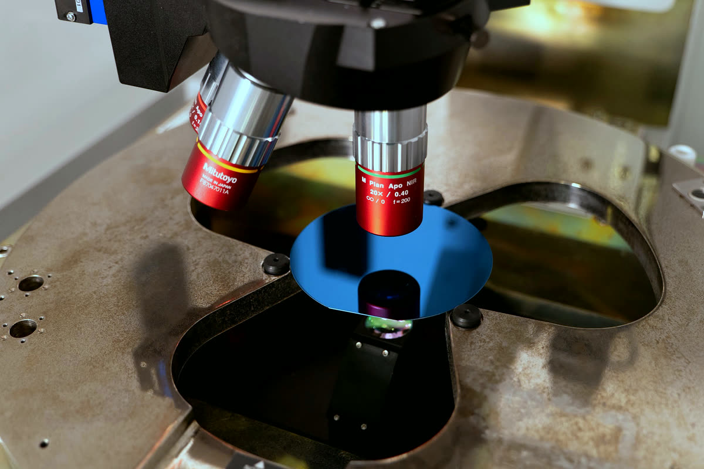

Equipment › Measure
Optical profiler
Zygo NexView NX2
Non-contact 3D topography and roughness of surfaces.
Work with us on this instrument
What it does
A white-light interference microscope. The objective splits the light between the surface and an internal reference; as it scans vertically, each point of the image shows interference only when the two paths are equal, and the scan position where the signal peaks gives the height of that point.
This coherence scanning interferometry measures heights with sub-nanometre resolution at any magnification, from low-power objectives that see a wide area to high-power ones that resolve fine detail. Neighbouring fields can be stitched into one map of a larger part.
It measures the roughness of super-polished optics, the height of steps, films and etched structures, and the shape of machined and patterned parts, all without touching them.
What we use it for
Roughness of polished crystals and wafers
Surface quality after each polishing step and before bonding, where roughness decides whether two surfaces join.
Films and etched structures
Thickness of deposited films and depth of etched features and grooves.
Measurements with industry
Surface profile of intraocular lenses, in a collaboration with a company.
Working with us
We can measure the roughness and topography of your samples, from polished optics to patterned devices, in joint projects.
